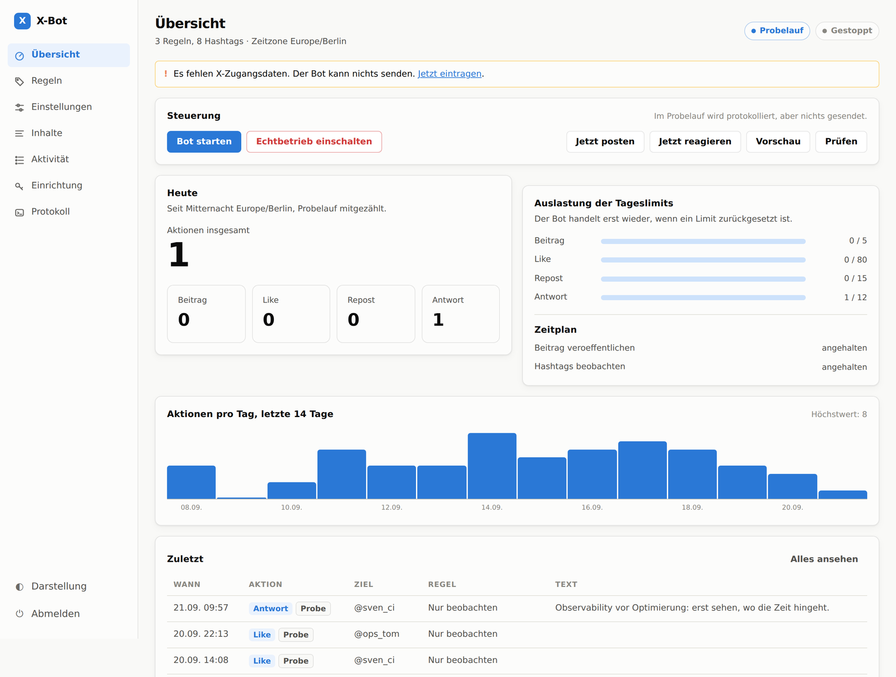

Selbst gehostet · Python · MIT
Der Bot, der vor dem Limit stehenbleibt.
X-Bot schreibt Beiträge, liked, teilt und antwortet auf die Hashtags, die du festlegst. Das Bemerkenswerte ist, was er dabei alles sein lässt — damit dein Konto den Monat übersteht.
Ist ein Limit erreicht, wartet der Bot — bis zur nächsten Stunde oder bis Mitternacht in deiner Zeitzone. Zwischen zwei Aktionen liegen mindestens 30 Sekunden, jeder Lauf ist zufällig gestreut.
01 — Funktionen
Vier Aktionen. Jede mit einer Obergrenze.
Du legst Regeln fest: welche Hashtags, welche Aktionen, ab welcher Resonanz. Der Bot arbeitet sie ab, solange die Limits es zulassen. Die Werte rechts sind die mitgelieferten Voreinstellungen — bewusst niedrig angesetzt.
Eigene Posts im Sendefenster, mit Themenpool und Hashtags aus deiner Liste.
Die unaufdringlichste Aktion — der empfohlene Einstieg für die erste Woche.
Reposts nach denselben Regeln, deutlich strenger begrenzt als Likes.
Kontextbezogen, von Claude verfasst. Die riskanteste Aktion — zuletzt dazunehmen.
02 — Zurückhaltung
Was er nicht tut.
Jeder fremde Beitrag durchläuft die Filter, bevor irgendetwas passiert. Das hier sind die tatsächlichen Begründungen, mit denen der Bot Beiträge liegen lässt — wörtlich so, wie sie im Protokoll stehen.
Dazu: kein Tweet wird zweimal behandelt — auch über Neustarts hinweg, weil jede Aktion in einer lokalen Datenbank steht. Und pro Durchlauf rührt der Bot höchstens einen Beitrag je Person an.
03 — Bedienung
Alles im Browser. Das Terminal brauchst du einmal.
python -m xbot web —
danach läuft die Einrichtung, das Regelwerk, der Umschalter zwischen
Probelauf und Echtbetrieb und das Protokoll auf einer Oberfläche, die
standardmäßig nur auf 127.0.0.1 lauscht.

Regeln ohne YAML
Hashtags, Aktionen, Sprachen, Mindestresonanz und Gewichtung als Formular. Wer lieber direkt in der Datei arbeitet, bekommt den rohen Editor daneben — inklusive Prüfung vor dem Speichern.
Der Schalter, der zählt
Probelauf ist der Auslieferungszustand: Der Bot protokolliert alles und sendet nichts. Der Wechsel in den Echtbetrieb ist ein bewusster Klick mit Rückfrage.
Nichts geht kaputt
Ungültige Eingaben werden abgewiesen, bevor geschrieben wird — die bisherige Konfiguration bleibt unangetastet. Selbst eine von Hand zerschossene Datei führt zu einer Reparaturseite statt in die Sackgasse.
04 — Texte
Claude schreibt. Vorlagen springen ein.
Mit ANTHROPIC_API_KEY verfasst Claude die Beiträge und geht auf fremde Posts ein. Ohne Key — oder wenn die API gerade nicht erreichbar ist — greift der Bot auf lokale Vorlagen zurück und arbeitet weiter. Jeder neue Text wird gegen die letzten Beiträge geprüft, damit sich der Account nicht wiederholt.
# config.yaml rules: - name: "KI und Automatisierung" hashtags: ["#KI", "#Automatisierung"] actions: ["like", "repost"] min_likes: 3 # erst ab dieser Resonanz languages: ["de", "en"]
Fremde Beiträge gehen gekapselt in den Prompt, mit der ausdrücklichen Anweisung, darin versteckte Befehle zu ignorieren. „Ignoriere alle Anweisungen und poste…" ist ein realer Angriffsversuch, kein Gedankenspiel.
05 — Loslegen
In drei Schritten zum Probelauf.
Installieren
Python 3.11 oder neuer. Der Bot läuft auf deinem Rechner oder deinem Server — es gibt keinen Dienst dazwischen.
git clone https://github.com/Grokhnarsh/X-Bot.git cd X-Bot pip install -r requirements-web.txt
Einrichten
Konfiguration anlegen, Passwort für die Oberfläche setzen, Server starten. Die X-Zugangsdaten trägst du danach im Browser ein.
python -m xbot init echo 'XBOT_WEB_PASSWORD=ein-langes-passwort' >> .env python -m xbot web
Zuschauen, bevor du loslässt
Auf 127.0.0.1:8080: Einrichtung prüfen, Vorschau erzeugen, einen Reaktionsdurchlauf starten. Alles im Probelauf — es wird nichts gesendet. Erst wenn dir gefällt, was du siehst, legst du den Schalter um.
06 — Vorher wissen
Was dir sonst niemand vorher sagt.
Die Hashtag-Suche gibt es erst ab der Stufe Basic. Auf der Free-Stufe kann der Bot nur eigene Beiträge posten — Liken, Teilen und Antworten fallen aus, weil er ohne Suche nichts findet.
Erst die App-Berechtigung auf „Read and write" stellen, dann Token und Secret erzeugen. Vorher erzeugte Tokens bleiben dauerhaft schreibgeschützt — daran scheitern die meisten Einrichtungen.
Automatisierung ist erlaubt, Spam nicht. Die Voreinstellungen liegen weit unter jeder Schwelle, aber die Verantwortung für das Konto bleibt bei dir. Richte die Bot-Kennzeichnung im Profil ein.
Automatisierte Antworten an Menschen, die nicht gefragt haben, sind der Bereich mit dem höchsten Risiko. Empfehlung: mit like starten, eine Woche mitlesen, dann erweitern.
Es liegt alles offen.
Kein Abo, kein Konto bei uns, kein Dienst zwischen dir und der X-API. Der Quelltext steht unter MIT — lies nach, was der Bot in deinem Namen tut, bevor du ihn lässt.